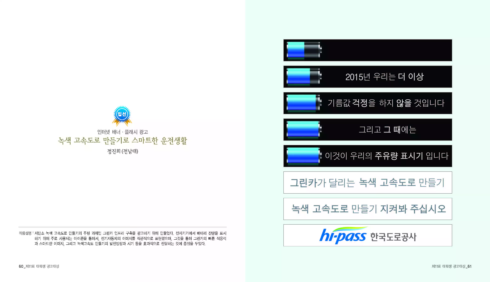
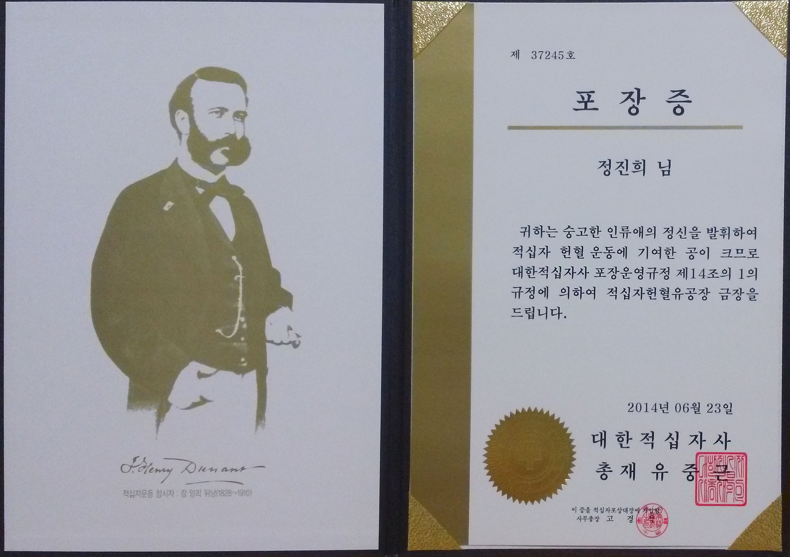

만들었다. 버킷리스트!
최고 기록 = 한라산 1,947m
요약: 메달 받으려고 자전거 구입. 존나 달림. 목표 달성. 자전거 창고에 쳐박음.
아무튼, 야무지게 1,000 km 이상을 내달리면서 성공적으로 완주. 동영상으로도 남김!
려권도 없는 나애 우울한 인생애 무슨 볼일이시조?
버킷리스트로 도전했던 자전거 여행...을 찍은 영상으로 힛갤 입성함.
2008년 처음으로 윈도용 응용프로그램을 만듦. 계산기 같은 거였는데, C#으로 만들었음.
이거 만들었다.
한국도로공사 공모전(디자인)에서 아슬아슬하게 입선.
1. 이런식으로 카드가 돌아가면서
2. 다른 내용을 볼수가 있읍니다
자전거 여행에 침낭을 괜히 싸메고 간 게 아니라구.
10 km 해봤는데, 1시간 넘기고... 발에 물집생김. 어휴 한심...
영화 주먹왕 랄프를 봤음. 주인공인 랄프가 메달이 갖고 싶어서 이리저리 뛰어다닌다는 스토리. 보고나서는 '메달 하나 가지려고 저 고생을... 모자란 놈 같으니...'라고 생각했음.
근데... 다음날 부터 메달이 엄청나게 갖고 싶어서 일이 손에 안 잡힘! 으악!!!!
그래서 메달 받기 프로젝트에 돌입. 처음엔 단축마라톤 참가상으로 받아낼 생각이였지만 저질 체력으로 인한 지구력 부족으로 포기. 인터넷 찾아보던 중 자전거로 인천에서 부산까지 가면 메달준다고 하길래 바로 자전거 구입함.
결국 메달 받아서 잘 모셔놓음^^ 해피엔딩.

술은 넘나 맛없고 비싸서 내 의지로 달성되는 일은 없을 것 같다...
정보처리기능사, 사무자동화산업기사, 산업안전기사 취득.
MOS 2010 MASTER. 취득 비용만큼은 여느 국제자격증에 뒤지지않음.
다음은 영혼까지 끌어모은 자격 내역이다.
2013년 여름. 화학공학 전공자로서 자격증 하나는 있어야 하지 않겠나 하는 생각에 화공기사 시험 준비. 시험 당일까지 안일하게 띵까띵까 놀다가 시험장 입갤. 시험지 받고 문제 보는 순간 땀이 삐질삐질 나왔지만 당황하지않고 마킹하고 나옴. 결과는 1점 차이로 탈락. 젠자아아자아잦아아랒아아자라잘잼ㄹ!
같은 해 가을. 기사 3회차에 화공기사 시험이 없음! 뭐야이게... 그래서 적당해 보이던 산업안전기사에 도전. 필기 무난하게 합격. 실기는... 한 문제 차이로 탈락. 으아아아ㅏ앙ㅇㅇ아아아앙 안 돼! 현실을 받아들이지 못하고 산업인력공단 고객의 소리에 시험채점 잘못됐다고 깽판침(실은 예의바르게 재채점 문의). 답변에 재채점 결과 적나라하게 알려주며 재차 능욕당하고 쓸쓸히 다음 시험 준비. 으아아아아ㅓ랑머ㅏ감ㄱ! 시험공부 안 한 과거의 나 존나 패고싶다!
안드로이드 앱을 만들어서 마켓에 올리면서, 사업자등록을 한 적이 있다.
국민연금관리공단에서 귀신같이 신고사실을 알고 전화해서 말하더라. "직업을 갖고 계신것으로 확인되어 국민연급 납부 대상자가 되셨습니다."
내가 사업자 등록만 했을 뿐 실질적인 소득이 없다고 하소연하자, "그럼 6개월의 유예기간을 드리겠습니다."라는 답변 들음.
정확히 6개월 뒤 똑같은 전화가 와서 소오름 돋음;; 결국 이걸 유지하고있을 필요성을 느끼지 못하고 폐업신고함.